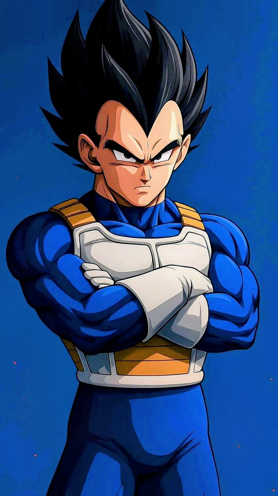
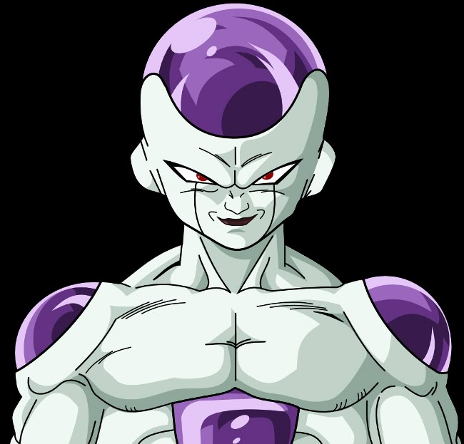
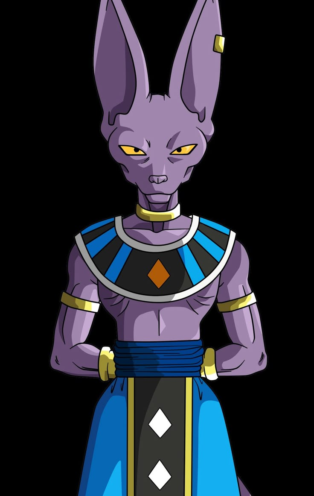
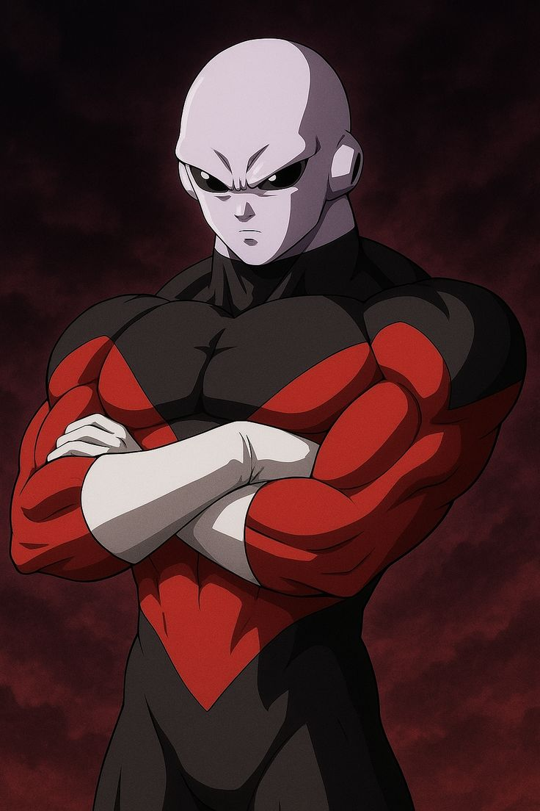

Guerreiros Lendários
Explore o poder dos Saiyajins e proteja a Terra das ameaças intergalácticas. Uma jornada em busca das Esferas do Dragão espera por você.
Explorar Agora
Son Goku
oi eu sou o Goku! O herói da Terra. Um guerreiro Saiyajin de coração puro que busca constantemente superar seus próprios limites, ele dedica sua vida a treinar, proteger a Terra e enfrentar adversários formidáveis, superando seus próprios limites continuamente para se tornar o lutador mais forte do universo
Ver mais
Vegeta
O Príncipe dos Saiyajins. Orgulhoso e determinado, sua rivalidade com Goku o leva a novos níveis de poder.
Ver mais
Freeza
o imperador do universo e um dos vilões mais icônicos de Dragon Ball. Pertencente à raça dos Demônios do Gelo, ele é conhecido por sua frieza, crueldade e sadismo. Ele busca poder absoluto e governa seu império através do medo, sendo o grande arquiteto da destruição do planeta.
Ver mais
Bills
também conhecido como o Deus da Destruição do Universo 7, é uma das entidades mais poderosas de Dragon Ball Super. Embora sua aparência lembre um gato da raça Sphynx, ele é um ser milenar temido por todo o cosmos, cuja principal função é destruir planetas para manter o equilíbrio do universo.
Ver mais
Jiren
conhecido como "o Cinzento", é um membro de elite da Tropa do Orgulho do Universo 11 e o antagonista principal do Torneio do Poder em Dragon Ball Super. Ele é um guerreiro estoico e honrado, cujo poder bruto ultrapassa o de muitos Deuses da Destruição.
Ver mais